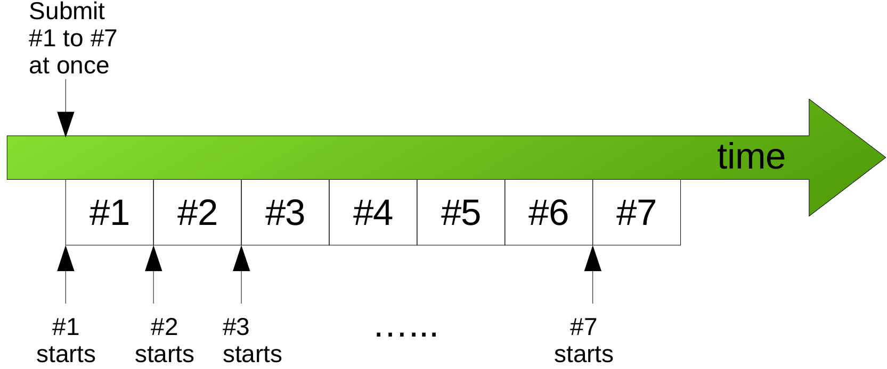
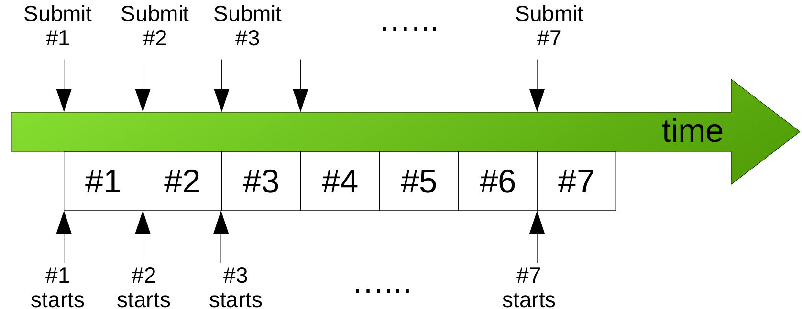

Interpretation of Wait Time
2022-02-07
The average wait time of the jobs on an HPC cluster is often defined simply as the average of the differences between submission times and the start-times of the jobs being considered, and used to gauge the usability, or as some type of “efficiency” measure, of a HPC cluster. The purpose of this note is to demonstrate that, given exactly the same amount of computation and the same order all jobs are completed, the apparent wait time perceived by the user can be quite different depending how the jobs are submitted. The wait time alone may not tell the whole story of the cluster’s job scheduling.
Consider a (simplified) cluster consisting of only one compute node. A user has 7 identical jobs, named job #1, #2, … to #7, to run. Each job will take exactly one day to complete on the compute node. The compute node can run only one job at a time. Consider the following two scenarios.
Scenario 1
In this scenario, all 7 jobs are submitted at once on Day 1, illlustrated below:
{kind=link}
On Day 1, job #1 starts and runs to completion at the end of the day. On Day 2, job #2 starts, and so on. One the 7th day, job #7 starts and runs to completion. The wait time for job #1 is 0 (since the compute node is immediately available), the wait time for job #2 is 1 day (i.e. run after job #1 is completed), and the wait time for job j is j-1 days. The average wait time for these jobs would beq (0 + 1 + 2 + … +6) / 7 = 3 days (or (N-1)/2 for N jobs, N=7 here).
Scenario 2
In this scenario, the user submits one job per day (e.g. at the same time of a day): job #1 on Day 1, #2 on Day 2, and so on, as illustrated below:
{kind=link}
On the 7th day, the user submits job #7. The cluster’s accounting records will show that all 7 jobs have zero wait time, because each job is able to start immediately after submission. Thefore, the average wait time of these jobs would be zero.